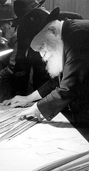

Prepared for publication by F. Zarchi For many years, R’ Levi Bistritz
For many years, R’ Levi Bistritzky a”h, rav in Tzfas, would present the Rebbe with lulavim and hadasim. Every year, a few days before Sukkos, the Rebbe would pick from the dozens of lulavim and hadasim that he brought. * How did the Rebbe pick a lulav? Where did the hadasim come from? What kind of e
Prepared for publication by F. Zarchi

It started with my father having an Israeli business partner who would import esrogim, lulavim and hadasim. For many years, I would sit for hours and choose 120 hadasim from Tzfas, with the rows of three leaves perfectly aligned, for the Rebbe.
Every year, after I would bring the Rebbe the Dalet minim, when the Rebbe would see my father, he would say to him, “I used the hadasim.”
Hadasim were sent to the Rebbe from Argentina and one other place in America. The Rebbe once told my father that from all the places in the world he takes three hadasim, in other words, three from each location, and the rest of the hadasim are from Tzfas.
One year, it was twelve o’clock on Erev Yom Tov when my father got a call from R’ Chadakov, telling him that the Rebbe asked whether he might have a kosher lulav for him. The Rebbe was very disappointed by the lulavim that had been brought to him. He had looked at all of them, and apparently none of them were good enough. Those in charge had put effort into selecting the esrogim, which were beautiful, while the lulavim had arrived only on Erev Yom Tov and were not very nice. We had about 500-600 lulavim left out of 2000 in the original crates which we hadn’t touched.
We closed the business and started going through the hundreds of lulavim. I picked the best ones, about thirty, and rushed over to 770. They let me go inside to the yechidus room. In the Rebbe’s room, in front of the desk, there are two chairs with red upholstery and arms. They are for people who have yechidus who sit down on their own, or those whom the Rebbe says should sit down. The Rebbe arranged one chair and I laid the lulavim over the arms. I opened the string that I had tied earlier and handed the Rebbe lulav after lulav. He examined them and chose a number for himself. I could see that the Rebbe was happy when he found a lulav that he liked.
The Rebbe also gave out lulavim and esrogim to many shluchim, so he would choose not only for himself, but for them too.
When I went on shlichus to Eretz Yisroel in 5736, I no longer went in on Erev Yom Tov.
***
I also brought the Rebbe hadasim every year. I would bring in a large bundle of choice hadasim. Unlike the lulav, the Rebbe would not pick hadasim and whatever we brought, he took.
The Rebbe was particular about paying, as it says “And you shall take for you.” The word “you” means “belonging to you.” However, there is a dispute among the poskim about whether one needs to pay before Yom Tov or can pay afterward. The Rebbe Rayatz was not particular about paying for the Dalet minim before Yom Tov.
Sometimes, the Rebbe gave me money for my efforts, and sometimes the Rebbe gave me money and told me I had to buy my wife a present before Yom Tov.
What did the Rebbe look for in a lulav? First, he would take a lulav and look at the spine to ascertain that it was straight. Then he would rotate the lulav to one side in order to see the color and he would do the same for the other side. He wanted to be sure it was green and not white. Then he would take the lulav and examine the tip. He would usually take a lulav with the brown bark so that the lulav would be completely sealed. The Rebbe would take a lulav that was more tightly closed.
The Rebbe said a bracha over an esrog from Calabria (Genoa), but he would also accept esrogim from Eretz Yisroel, from Kfar Chabad, and would take them after davening and shake them.
Beis Moshiach. "Prepared for publication by F. Zarchi For many years, R’ Levi Bistritz." Beis Moshiach, no. 851 (September 28, 2012).